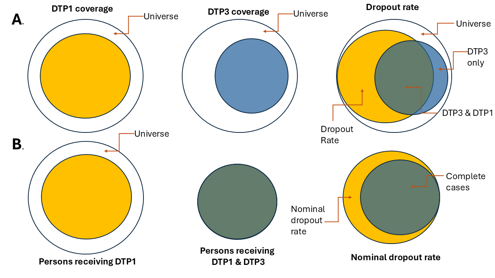
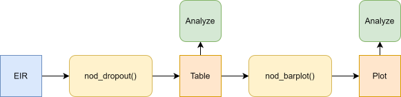
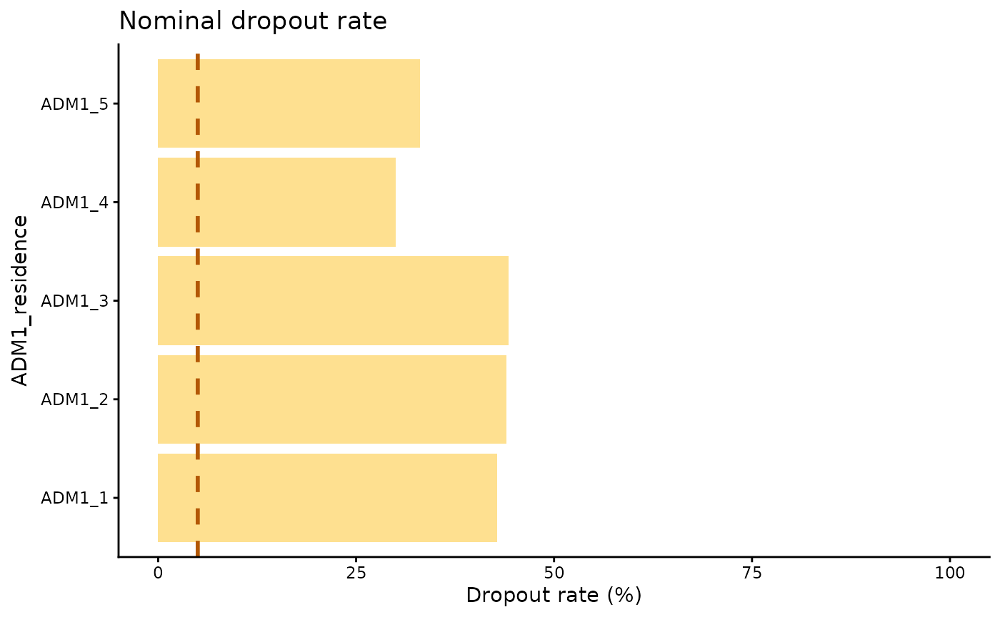

Tasa de abandono nominal
OPS/CIM
22 de abril de 2025
Source:vignettes/articles/es/nominal_dropout_es.Rmd
nominal_dropout_es.RmdFundamento
La tasa de abandono es un indicador que se utiliza para evaluar la pérdida de seguimiento en los esquemas de vacunación. Muestra el porcentaje de personas que recibieron una dosis inicial (por ejemplo, DTP1), pero no recibieron una dosis posterior o final (por ejemplo, DTP3). En los sistemas agregados, se estima mediante la siguiente fórmula:
El análisis con datos agregados no permite confirmar que las personas que recibieron ambas dosis sean las mismas, como se muestra en la Figura 1A. Los registros nominales electrónicos de vacunación permiten hacer el análisis persona por persona y confirmar si quienes recibieron la primera dosis también recibieron la dosis de seguimiento, como se ilustra en la Figura 1B.

Nota
Todas las funciones utilizadas para los análisis de abandono nominal dentro de PAHOabc comienzan con el prefijo
nod_.
Glosario
Divisiones político-geográficas
A lo largo de esta viñeta se hace referencia a distintos niveles de división político-geográfica. Estos niveles son definidos por cada país o territorio y pueden recibir nombres diferentes. PAHOabc no depende de esos nombres locales; por eso, el usuario debe recodificar sus variables para ajustarlas a la estructura que utiliza el paquete.
En concreto, PAHOabc puede distinguir tres niveles administrativos que, listados del nivel superior al inferior, son: ADM0, ADM1 y ADM2.
- ADM0: El país. Este es el nivel administrativo más alto.
- ADM1: La primera subdivisión geográfica del país. ADM0 contiene varias subdivisiones ADM1.
- ADM2: La segunda subdivisión geográfica del país. Cada ADM1 contiene varias subdivisiones ADM2.
Nombres de vacunas
Los conjuntos de datos de ejemplo utilizan una convención específica para nombrar las dosis de vacunas. Es posible que esta convención no coincida con la que usa su país o institución, pero esto no afecta el uso del paquete si los nombres se aplican de manera consistente.
Por ejemplo, los nombres de las vacunas utilizados en el paquete PAHOabc son:
| Abreviatura | Nombre completo |
|---|---|
| SRP1 | Vacuna contra sarampión, rubéola y paperas (1.ª dosis) |
| DTP1 | Vacuna contra difteria, tétanos y tos ferina (1.ª dosis) |
| DTP2 | Vacuna contra difteria, tétanos y tos ferina (2.ª dosis) |
| DTP3 | Vacuna contra difteria, tétanos y tos ferina (3.ª dosis) |
| BCG RN | Vacuna Bacillus Calmette–Guérin (al nacer) |
| YFV1 | Vacuna contra la fiebre amarilla (1.ª dosis) |
Uso
Instalar el paquete
El primer paso para ejecutar el análisis de tasa de abandono nominal es instalar el paquete PAHOabc, disponible en GitHub.
devtools::install_github("IM-Data-PAHO/pahoabc")Cargar los datos
Las funciones de este módulo requieren que proporcione su RNVe en un formato específico.
Para facilitar la prueba de PAHOabc y la comprensión de la estructura requerida, a continuación se presenta el conjunto de datos de ejemplo que utiliza este módulo.
RNVe
El conjunto de datos pahoabc::pahoabc.EIR proporciona un
ejemplo de Registro Nominal de Vacunación electrónico (RNVe). Es una
tabla nominal simulada con eventos individuales de vacunación. Cada fila
corresponde a una vacunación e incluye información sobre la residencia
de la persona, el lugar donde fue vacunada (ocurrencia), su fecha de
nacimiento y la dosis recibida.
pahoabc.EIR %>% head() %>% kable(caption = "Ejemplo de Registro Nominal de Vacunación electrónico")| ID | date_birth | date_vax | ADM1_residence | ADM2_residence | ADM1_occurrence | ADM2_occurrence | dose |
|---|---|---|---|---|---|---|---|
| 191997 | 2023-08-08 | 2023-12-26 | ADM1_4 | ADM2_4_35 | ADM1_4 | ADM2_4_35 | DTP2 |
| 212189 | 2023-12-20 | 2023-12-26 | ADM1_5 | ADM2_5_61 | ADM1_5 | ADM2_5_61 | BCG RN |
| 118063 | 2022-09-15 | 2023-12-26 | ADM1_2 | ADM2_2_5 | ADM1_2 | ADM2_2_5 | DTP1 |
| 118063 | 2022-09-15 | 2023-12-26 | ADM1_2 | ADM2_2_5 | ADM1_2 | ADM2_2_5 | YFV1 |
| 130751 | 2022-10-27 | 2023-12-12 | ADM1_5 | ADM2_5_55 | ADM1_5 | ADM2_5_55 | YFV1 |
| 136532 | 2021-09-21 | 2023-12-26 | ADM1_3 | ADM2_3_12 | ADM1_3 | ADM2_3_12 | SRP1 |
-
ID: Número único de identificación de la persona. - Fecha de nacimiento (
date_birth): Fecha de nacimiento de la persona. - Fecha de vacunación (
date_vax): Fecha del evento de vacunación. - ADM1: Primer nivel administrativo geográfico del país.
- ADM2: Segundo nivel administrativo geográfico del país.
- Lugar de residencia (
Residence): Lugar donde vive la persona. - Lugar de vacunación (
Occurrence): Lugar donde ocurrió la vacunación. - Dosis (
dose): Variable combinada que representa el tipo de vacuna y su número de dosis correspondiente. Por ejemplo, DTP1 se refiere a la primera dosis de una vacuna que contiene componentes de difteria, tétanos y tos ferina.
Análisis de abandono nominal
PAHOabc permite estimar la tasa de abandono nominal persona por persona. El análisis puede aplicarse a cualquier par de dosis, siempre que se indique una dosis inicial y una dosis final. Para interpretar correctamente los resultados, la dosis inicial debe preceder a la dosis final en el esquema de vacunación; por ejemplo, DTP1-DTP3 o DTP1-MCV1. Además, el usuario puede seleccionar el nivel de agregación de los resultados: nacional, ADM1 o ADM2.
Flujo de trabajo esperado
Las funciones nod_dropout() y nod_barplot()
trabajan en conjunto para analizar y visualizar el abandono nominal. La
función nod_dropout() calcula el abandono nominal y los
casos completos por residencia, según los niveles administrativos,
cohortes de nacimiento y vacunas seleccionados. Su resultado es una
tabla compatible con nod_barplot(), que genera la
visualización correspondiente.

Ejemplo
A continuación se muestra un caso de uso sencillo de
nod_dropout(), en el que se calcula el abandono nominal
entre DTP1 y DTP3 a nivel ADM1 usando el conjunto de datos de
ejemplo.
# Ejecuta la función de abandono nominal
example_dropout <- nod_dropout(data.EIR = pahoabc.EIR,
vaccine_init = "DTP1", #Vacuna inicial según su conjunto de datos
vaccine_end= "DTP3", #Vacuna final según su conjunto de datos
geo_level = "ADM1", #Puede ser ADM0, ADM1 o ADM2
birth_cohorts = NULL #Puede ser un vector de años o un año
)
# mostrar los resultados en una tabla
example_dropout %>%
kable(digits = 3, caption = "Tasa de abandono nominal entre DTP1 y DTP3 a nivel ADM1")| ADM1_residence | indicator | num | denom | percent |
|---|---|---|---|---|
| ADM1_1 | complete | 1491 | 2607 | 57.192 |
| ADM1_1 | dropout | 1116 | 2607 | 42.808 |
| ADM1_2 | complete | 6967 | 12429 | 56.054 |
| ADM1_2 | dropout | 5462 | 12429 | 43.946 |
| ADM1_3 | complete | 30999 | 55608 | 55.746 |
| ADM1_3 | dropout | 24609 | 55608 | 44.254 |
| ADM1_4 | complete | 5304 | 7574 | 70.029 |
| ADM1_4 | dropout | 2270 | 7574 | 29.971 |
| ADM1_5 | complete | 2703 | 4040 | 66.906 |
| ADM1_5 | dropout | 1337 | 4040 | 33.094 |
Parámetros aceptados
-
data.EIR: Tabla del RNVe estructurada con las variables listadas anteriormente.
-
vaccine_init: Nombre de la vacuna que se usará como punto de inicio del análisis, tal como aparece en la columna de dosis (dose).
-
vaccine_end: Nombre de la vacuna que se usará como punto final del análisis, tal como aparece en la columna de dosis (dose).
-
geo_level: Nivel administrativo que se usará en el análisis. Es un parámetro opcional y puede tomar los valores “ADM0”, “ADM1” o “ADM2”. Si se omite, el valor predeterminado es “ADM0”. -
birth_cohorts: Parámetro para segmentar el análisis según el año de nacimiento de las personas. Se basa en la columna de fecha de nacimiento (date_birth) y puede recibir un año o un vector de años.
Los parámetros data.EIR, vaccine_init y
vaccine_end son obligatorios. geo_level y
birth_cohorts son opcionales y permiten segmentar los datos
para análisis más precisos.
Consulte la documentación de la función con
?nod_dropout() en R para obtener más información.
Esta salida puede pasarse directamente a la función
nod_barplot() como se muestra a continuación.
# Ejecuta la función nod_barplot
example_dropout_plot <- nod_barplot(data=example_dropout, order="alpha")
#mostrar el gráfico
example_dropout_plot
Parámetros aceptados
La función nod_barplot() acepta los siguientes
parámetros:
-
data: Tabla generada a partir del resultado de la funciónnod_dropout(). -
order: Organiza las barras según tres opciones: alfabético (“alpha”), descendente (“desc”) o ascendente (“asc”); el valor predeterminado es “alpha”. -
within_ADM1: Permite filtrar dentro de un ADM1 y mostrar únicamente los datos ADM2 correspondientes al ADM1 especificado.
Interpretación
Este gráfico muestra el abandono nominal por nivel administrativo 1 e incluye una línea de 5 % como umbral de referencia. Una tasa de abandono alta significa que una proporción importante de las personas analizadas no recibió la dosis de seguimiento de su esquema. En un esquema de múltiples dosis, lo esperado es que toda persona que recibe una dosis inicial regrese para recibir la dosis siguiente. En este ejemplo, ADM1_1 presenta el peor resultado, mientras que ADM1_4 presenta el mejor.
Todas las unidades administrativas tienen una tasa de abandono nominal superior al 25 %. Esto significa que al menos el 25 % de las personas de ese grupo objetivo no regresó para recibir la dosis de seguimiento.
Resumen
Monitorear la continuidad en los esquemas de vacunación de múltiples dosis es fundamental para los programas de inmunización. La tasa de abandono nominal es la proporción de personas que inician una serie (por ejemplo, DTP1), pero no reciben la dosis final o de seguimiento (por ejemplo, DTP3). Este indicador ofrece una mirada persona por persona del desempeño del programa, algo que los conteos agregados no permiten observar.
Esta viñeta presenta un flujo de trabajo reproducible: instalar el
paquete, explorar el RNVe de ejemplo, calcular el abandono con
nod_dropout() y visualizar los resultados con
nod_barplot(). El ejemplo estima el abandono entre DTP1 y
DTP3 a nivel ADM1 y muestra que todas las subdivisiones superan el
umbral de 25 %; ADM1_1 presenta el peor resultado y ADM1_4 el mejor, en
relación con una línea de referencia de 5 %.
Al combinar datos nominales del RNVe con un flujo de análisis claro, PAHOabc ayuda a identificar pérdidas de seguimiento con desagregación geográfica y apoya a las autoridades de salud en la focalización de intervenciones.